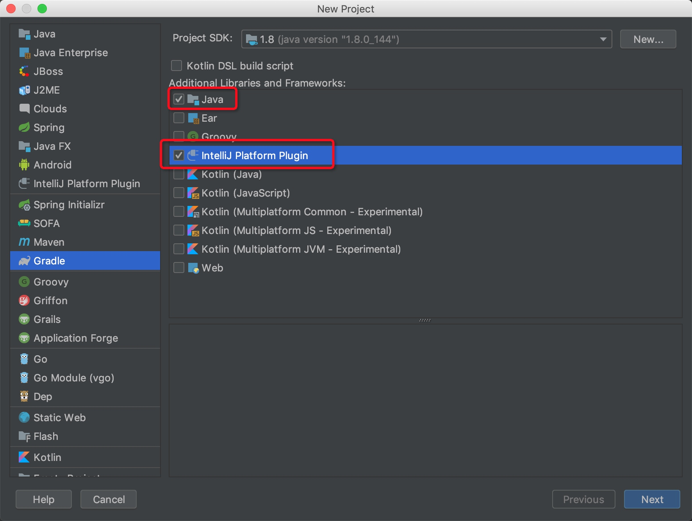
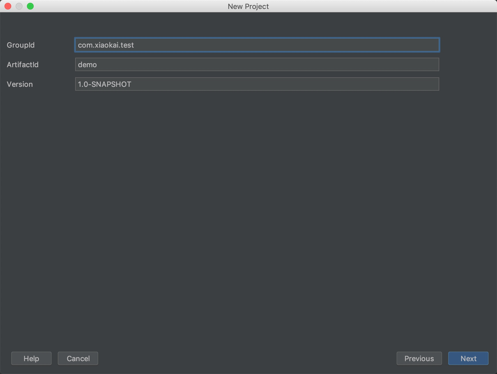
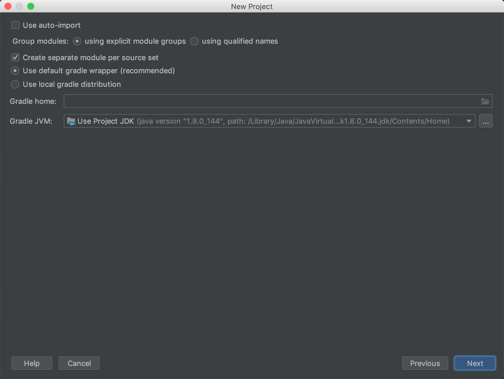
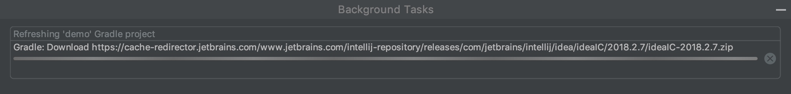
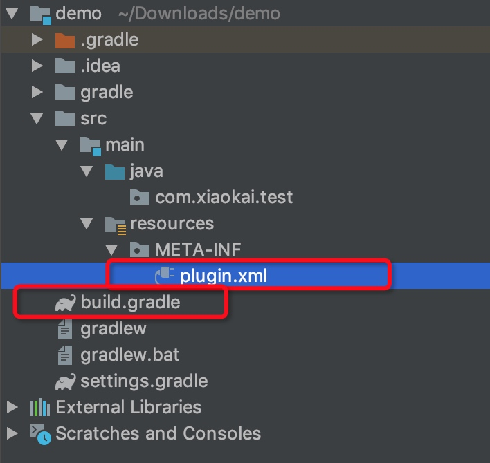
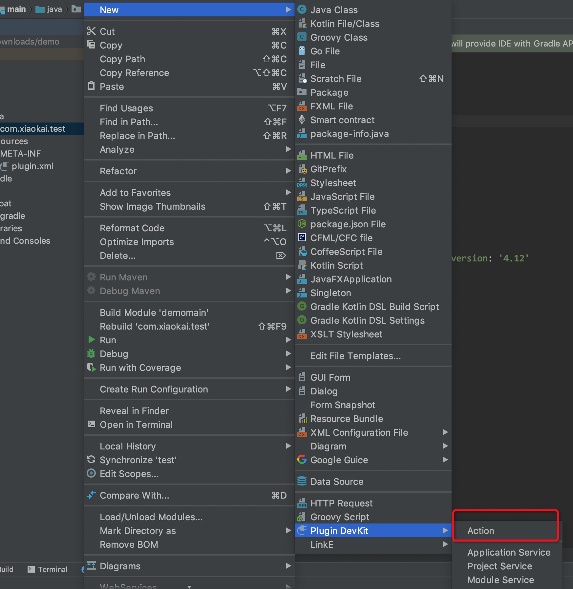
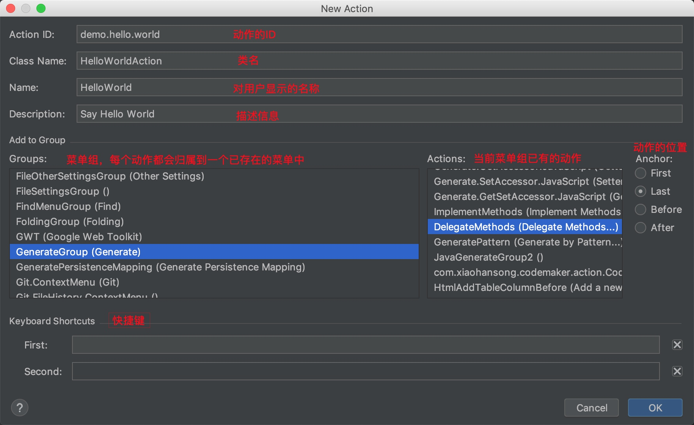
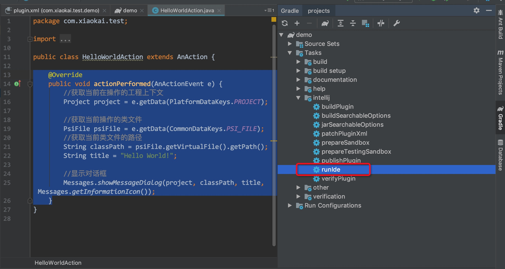
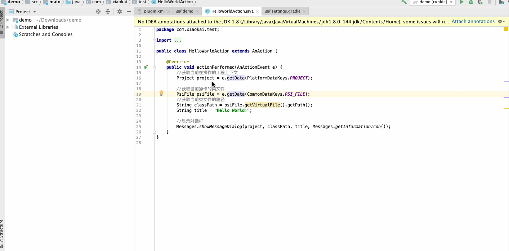

IntelliJ IDEA 是目前最好用的 JAVA 开发 IDE，它本身的功能已经非常强大了，但是每个人的需求不一样，有些需求 IDEA 本身无法满足，于是我们就需要自己开发插件来解决。工欲善其事，必先利其器，想要提高开发效率，我们可以借助 IDEA 提供的插件功能来满足我们的需求。如果没有我需要的功能怎么办？很简单，我们自己造一个！
插件能做什么？
IDEA 的插件几乎可以做任何事情，因为它把 IDE 本身的能力都封装好开放出来了。主要的插件功能包含以下四种：
- 自定义语言支持：如果有 IDEA 暂时不支持的语言，你可以自己写一个插件来支持，例如 Go 语言原来的支持就是通过插件做的，后来单独做了一个 Goland。官方有自定义语言插件支持的教程。
- 框架支持：例如Struts 2 的框架支持
- 工具集成：可以给 IDEA 的自带功能进行增强，例如对 Git 的操作增加 CodeReview 的功能。参考Gerrit
- 用户界面：自定义的插件改变用户界面。参考BackgroundImage
我为了减少重复代码的编写，写了一个代码生成的插件IDEA代码生成插件CodeMaker，支持自定义代码生成的模板。
Hello world 插件
依照惯例，我们从 Hello world 开始。
新建一个 Gradle 的插件工程
有些教程推荐用 IDEA 默认的插件工程来开始，但是我比较推荐用 Gradle 来管理整个插件工程，后面的依赖管理会很方便，否则都得靠手动管理。
点击新建工程，选择 Gradle

接下来填写项目属性

配置 Gradle，用默认配置就行

新建完工程之后，IDEA 会自动开始解析项目依赖，因为它要下载一个几百兆的 SDK 依赖包，所以会比较久，打开科学上网能快一点。

Gradle 依赖解析完成之后，项目结构如下图，其中 plugin.xml 是插件的配置，build.gradle 是项目依赖的配置（类比 pom.xml）。

下面就是默认生成的 plugin.xml
<idea-plugin>
<!--插件id-->
<id>com.xiaokai.test.demo</id>
<!--插件名称-->
<name>Demo</name>
<!--开发者信息-->
<vendor email="support@yourcompany.com" url="http://www.yourcompany.com">YourCompany</vendor>
<!--插件说明-->
<description><![CDATA[
Enter short description for your plugin here.<br>
<em>most HTML tags may be used</em>
]]></description>
<!-- please see http://www.jetbrains.org/intellij/sdk/docs/basics/getting_started/plugin_compatibility.html
on how to target different products -->
<!-- uncomment to enable plugin in all products
<depends>com.intellij.modules.lang</depends>
-->
<!--依赖的其他插件能力-->
<extensions defaultExtensionNs="com.intellij">
<!-- Add your extensions here -->
</extensions>
<!--插件动作-->
<actions>
<!-- Add your actions here -->
</actions>
</idea-plugin>
创建一个 Action
Action 是 IDEA 中对事件响应的处理器，它的 actionPerformed 就像是 JS 中的 onClick 方法。可以看出来，插件的开发本质上跟 web、Android 的开发没有什么不同，因为都是事件驱动的编程。
我们可以直接使用 IDEA 提供的 Action 生成器


点击 OK 之后会在 src 生成类文件：
package com.xiaokai.test;
import com.intellij.openapi.actionSystem.AnAction;
import com.intellij.openapi.actionSystem.AnActionEvent;
public class HelloWorldAction extends AnAction {
@Override
public void actionPerformed(AnActionEvent e) {
// TODO: insert action logic here
}
}
同时，动作的信息也会注册到 plugin.xml 中
<!--插件动作-->
<actions>
<!-- Add your actions here -->
<action id="demo.hello.world" class="com.xiaokai.test.HelloWorldAction" text="HelloWorld"
description="Say Hello World">
<add-to-group group-id="GenerateGroup" anchor="last"/>
</action>
</actions>
弹出对话框
创建完 Action 之后我们就要开始往里面写逻辑了，既然是 Hello World 教学，那我们就来试一下最简单的弹出对话框。
@Override
public void actionPerformed(AnActionEvent e) {
//获取当前在操作的工程上下文
Project project = e.getData(PlatformDataKeys.PROJECT);
//获取当前操作的类文件
PsiFile psiFile = e.getData(CommonDataKeys.PSI_FILE);
//获取当前类文件的路径
String classPath = psiFile.getVirtualFile().getPath();
String title = "Hello World!";
//显示对话框
Messages.showMessageDialog(project, classPath, title, Messages.getInformationIcon());
}
代码写完之后，打开 Gradle 的界面，点击 runIde 就会启动一个安装了插件的 IDEA，然后就可以进行测试。你还可以右键启动 Debug 模式，这样还能进行断点。

运行的效果如下图：

可以看到，我们右键打开 Generate 菜单之后，里面最后一项就是我们添加的 Action，
进阶的教程
如果想学习更多的原理和设计理念可以看IntelliJ Platform SDK的官方文档。不过老实说，它的文档写的挺差的，基本上就是简单讲了一下概念和原理，没有深入的分析。所以如果要深入研究还得靠自己。最靠谱的学习方式就是看别人写的插件，举个例子，你想知道怎么样实现自动生成代码，你就去找支持这个功能的插件，看他的源码是怎么写的。
我当时写CodeMaker的时候也是靠自己啃源码之后写出来的。下面我简单介绍一下我用过的一些 API，这些 API 基本都没有文档说明，全靠代码相传。
判断当前光标选择的元素是什么
//获取当前事件触发时，光标所在的元素
PsiElement psiElement = anActionEvent.getData(LangDataKeys.PSI_ELEMENT);
//如果光标选择的不是类，弹出对话框提醒
if (psiElement == null || !(psiElement instanceof PsiClass)) {
Messages.showMessageDialog(project, "Please focus on a class", "Generate Failed", null);
return;
}
获取当前类文件的所有类对象
一个类文件中可能会有内部类，所以读取的时候返回的是一个列表
public static List<PsiClass> getClasses(PsiElement element) {
List<PsiClass> elements = Lists.newArrayList();
List<PsiClass> classElements = PsiTreeUtil.getChildrenOfTypeAsList(element, PsiClass.class);
elements.addAll(classElements);
for (PsiClass classElement : classElements) {
//这里用了递归的方式获取内部类
elements.addAll(getClasses(classElement));
}
return elements;
}
格式化代码
public static void reformatJavaFile(PsiElement theElement) {
CodeStyleManager codeStyleManager = CodeStyleManager.getInstance(theElement.getProject());
try {
codeStyleManager.reformat(theElement);
} catch (Exception e) {
LOGGER.error("reformat code failed", e);
}
}
使用粘贴板
CopyPasteManager.getInstance()
.setContents(new SimpleTransferable(table.toString(), DataFlavor.allHtmlFlavor));
更多
更多的技巧可以参考我的项目CodeMaker，以及其他的开源插件。